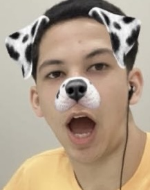

Arthur torres, 17 anos
Programador Java
Sou um jovem com responsabilidade social engajado na causa da proteção de todos os animais.
Este projeto surgiu durante o programa de estágio no Centro de Inovação e Tecnologia (CIT)
da prefeitura de Barueri. Ao tomarmos conhecimento da realidade dos animais de rua, sentimos o
desejo de utilizar nossos conhecimentos para auxiliar e contribuir com a sociedade.
Foi então que criamos uma plataforma simples e direta para ajudar a conectar animais em
busca de um lar com famílias amorosas.
Esta Nossa proposta seguiu por um caminho não óbvio,
trazendo à tona a campanha "ninguém me adota", para demonstrar que, apesar de tantos animais
precisando de um lar e com tanto amor para dar, as pessoas ainda procuram criadouros de animais
que muitas vezes estão apenas preocupados com o aspecto financeiro. Junte-se a nós nesta missão de amor
e compaixão.